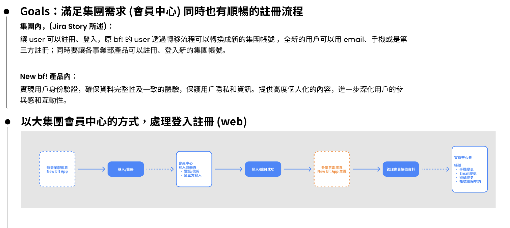
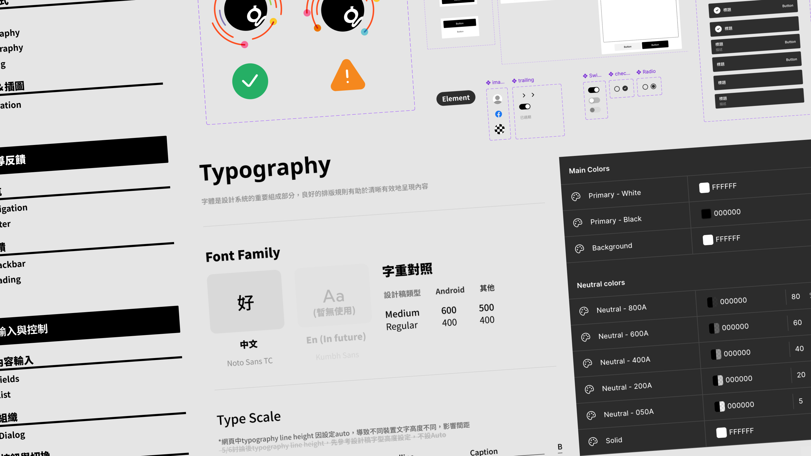
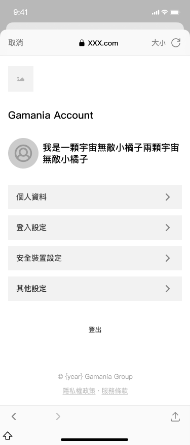
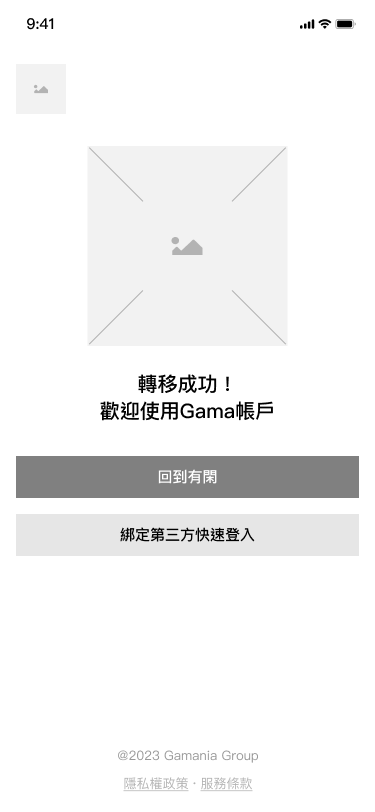
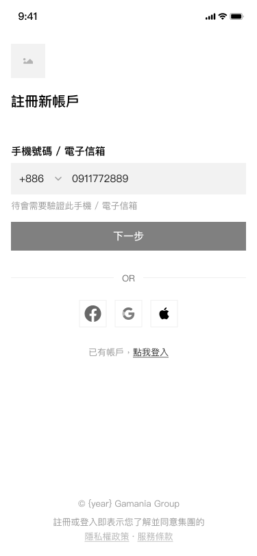
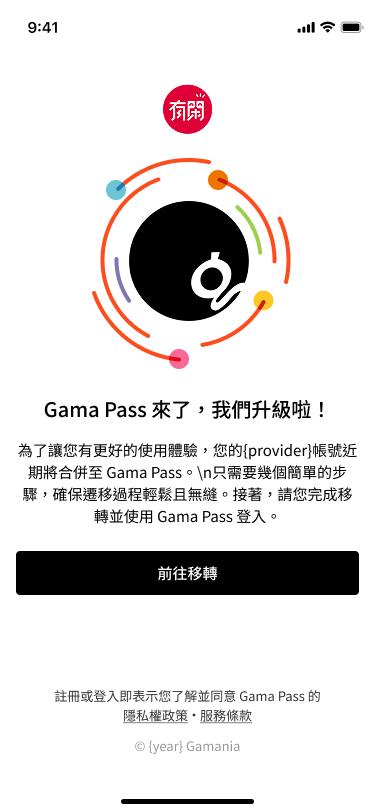
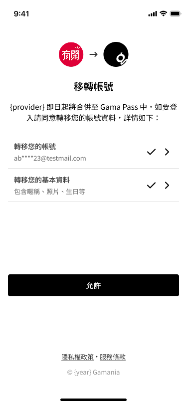
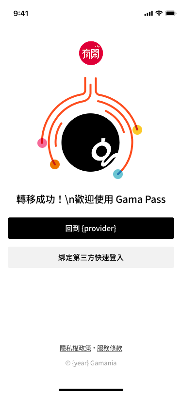

橘子集團旗下有閑、beanfun!、遊戲橘子等服務各自維運獨立帳號系統，用戶無法跨產品互通，管理成本高且體驗割裂。GamaPass 的目標，是從零建立統一會員平台——不只是功能整合，而是整個集團帳號體驗的重新定義。
然而這個專案有一個關鍵的設計制約：
集團品牌中心的視覺重塑方向仍在內部流程中，設計不能等。必須先建制一套可上線的基礎版本，但又不能讓日後的 Rebranding 造成大量反工。
這個制約，定義了整個設計系統的策略基調。

早期規劃：梳理集團各平台帳號狀態與移轉情境
面對品牌方向未定的制約，設計策略的答案是：去個性化。
簡潔、專業、乾淨——這不只是美學偏好，而是一個有意識的風險管理決策。去個性化的設計語言保留了最大彈性：GamaPass 作為集團帳號中心，需要承載旗下所有產品，平台本身不能有過強的個性，才能讓每個子品牌都能在同一套框架下自然呈現。同時，當 Rebranding 正式落地，既有元件只需調整 Token，不需推倒重來。

設計系統概覽：中性化、高彈性為核心原則
從草稿到最終版，元件的演進也體現了執行層的一個設計判斷：初期因時程壓力採用了部分原生系統元件（如彈窗），但後來全面迭代為自製元件。一致性本身就是安全感的一部分——當介面的每個細節都在同一套語言下運作，用戶感受到的不只是「好看」，而是可信賴。



早期草稿：低保真確認方向，快速收斂後進入高保真
帳號移轉是這個專案中最關鍵、也最有設計張力的環節。
需求方的邏輯很直接：步驟越少，摩擦越低，移轉率越高。但這個假設有一個盲點——對涉及帳號安全的操作而言，流程精簡並不等於用戶舒適。過度簡化反而會讓人不安：「這樣就好了？我的帳號資料有沒有問題？」這種焦慮，才是真正的轉換障礙。
解法是在流程中加入「價值主張先行」的設計層——在用戶正式執行移轉前，先讓他看見移轉的完整資訊與好處，確認理解後才進行操作。這個設計讓「確認」這個動作本身成為安全感的來源，而不是障礙。



確認移轉 → 移轉條款 → 移轉成功：用完整資訊建立安全感，再推動行動
- 2024/05/22 正式上線，完成集團多平台會員帳號整合與移轉
- 整合遊戲橘子會員數據，提升跨平台帳戶管理效率